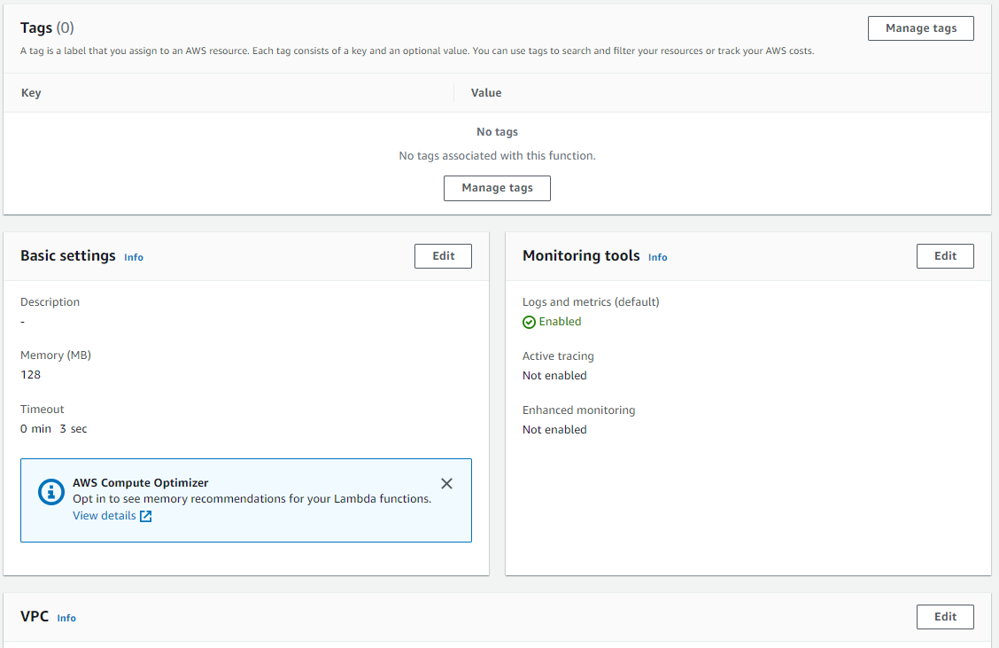

-
Click the Create Function button. The proceed with Author from scracth.
Give a name on your function and click Create function button. To set a role expand the Change default execution role, if you already have role, select Use and existing role and select one from the dropdown menu. Later you can also change the role from the Permissions tab from the lambda window.
-
Once created we will see the details about our new function. Note that everytime we make changes on our function we need to redeploy it again, by clicking the Deploy button. Below screenshots are for the Configuration tab.


-
On the Permissions tab we can find the permissions settings.